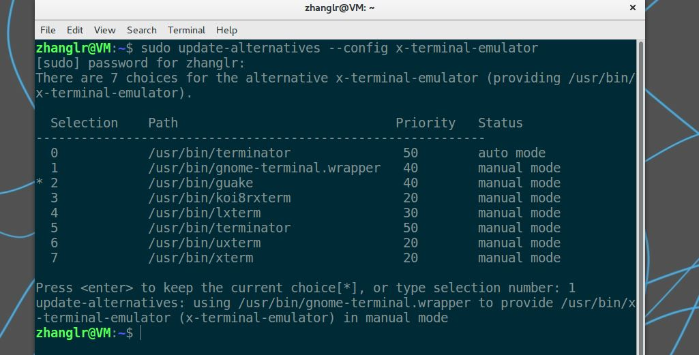

文件管理
| 操作 |
命令 |
| 复制文件 |
cp <文件名> |
| 复制文件夹 |
cp -r <文件夹名> |
| 删除文件 |
rm <文件名> |
| 删除文件夹 |
rm -r <文件夹名> |
| 创建文件 |
touch <文件名> |
| 创建文件夹 |
mkdir <文件名> |
| 移动文件/文件夹 |
mv src dst |
| 浏览文件 |
cat <文件名> |
| 赋执行权限 |
chmod +x <文件名> |
打包压缩
| 操作 |
命令 |
| 打包后压缩为一个.gz格式的压缩包 |
tar zcvf pack.tar.gz pack/ |
| 打包后压缩为一个.bz2格式的压缩包 |
tar jcvf pack.tar.bz2 pack/ |
| 打包后压缩为一个.xz格式的压缩包 |
tar Jcvf pack.tar.xz pack/ |
z/j/J为格式，c为压缩，v为可视，f为文件名
解包解压
| 操作 |
命令 |
| 解包解压到pack文件夹 |
tar zxvf pack.tar.gz -C pack/ |
| 解包解压到pack文件夹 |
tar jxvf pack.tar.bz2 -C pack/ |
| 解包解压到pack文件夹 |
tar Jxvf pack.tar.xz -C pack/ |
z/j/J为格式，x为解压，v为可视，f为文件名
修改属主属组
1
| sudo chown lrzhang:lrzhang src
|
修改权限
权限码依次是属主u，属组g，其他人o
或直接改权限码
755 = 111,101,101分别对应u,g,o的r,w,x
添加开机自启动服务
1
| sudo gnome-session-properties
|
修改默认终端工具
1
| sudo update-alternatives --config x-terminal-emulator
|

deb包安装
1
2
| sudo dpkg -i <packname.deb> #安装
sudo dpkg -r <packname> #卸载
|